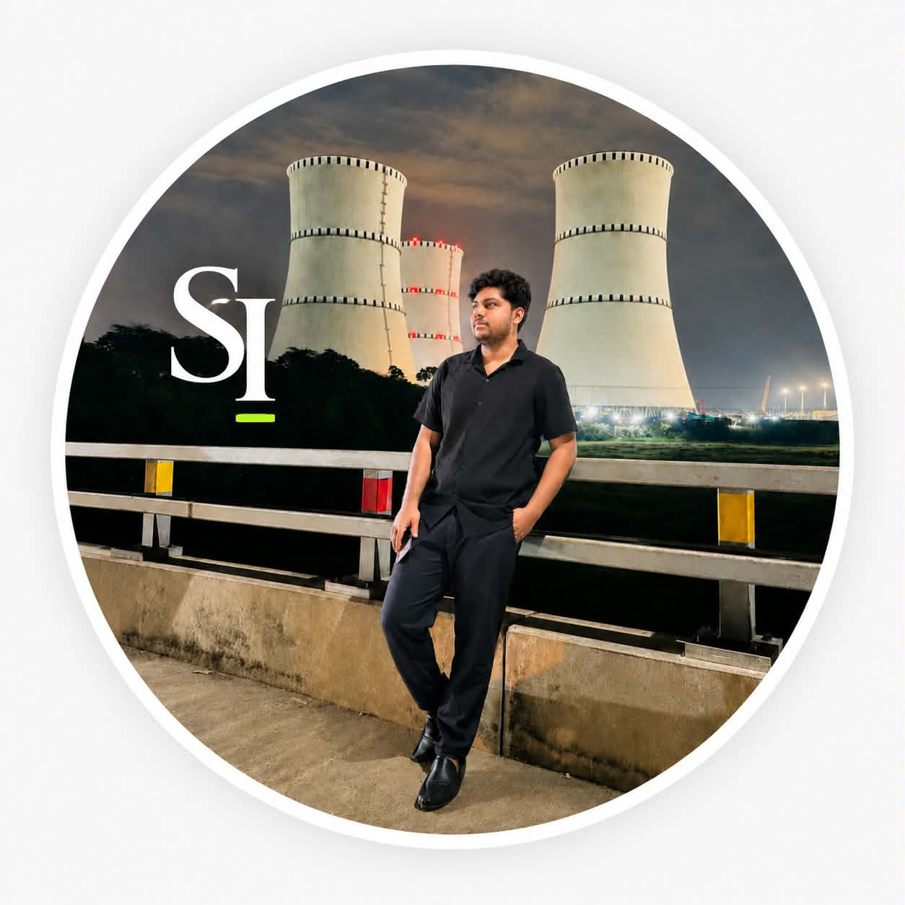
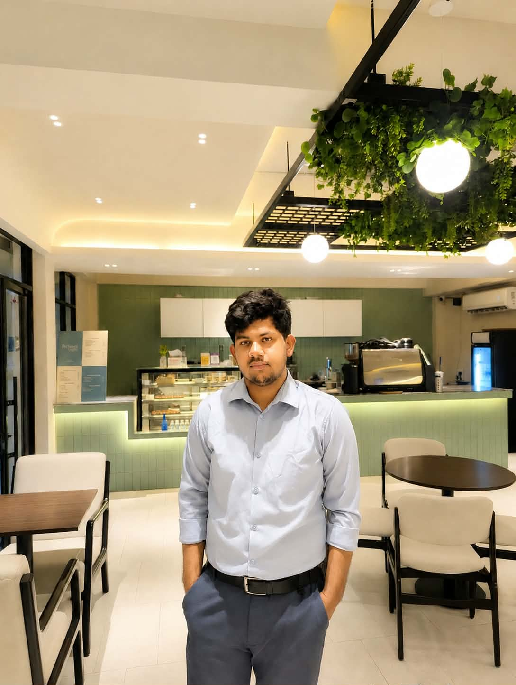
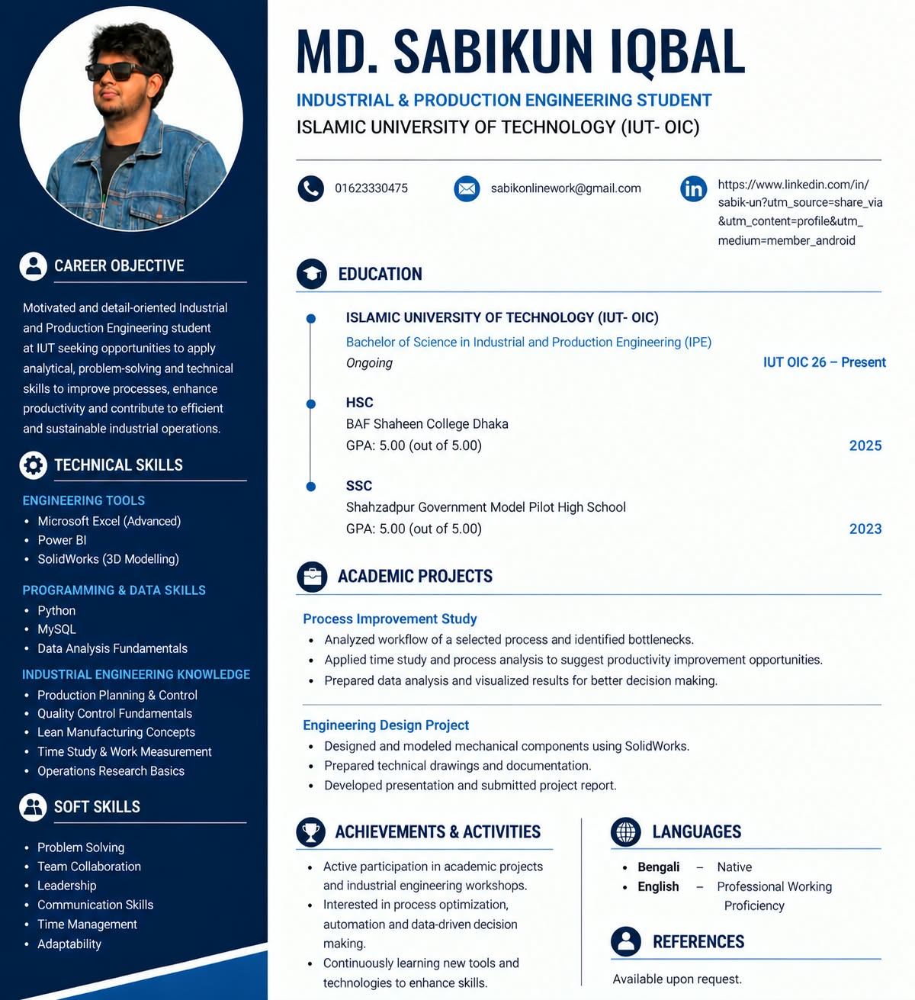

Operations & Optimization
Operations research, production planning, scheduling, process improvement, decision models.
ORPlanningOptimization

MD.SABIKUN IQBAL Let’s connectIndustrial & Production Engineering student focused on operations, optimization, analytics, quality, and human-centered problem solving.

I’m an Industrial & Production Engineering student who enjoys turning complex operational problems into clear, practical solutions. My interests sit at the intersection of manufacturing, analytics, optimization, and business.
I’m especially interested in projects where data, CAD & CAM, process design, and continuous improvement create measurable impact.
More about me ↗A balanced toolkit across engineering analysis, operations, software, and communication.
Operations research, production planning, scheduling, process improvement, decision models.
Quality tools, root-cause analysis, lean principles, waste reduction, continuous improvement.
Data analysis, visualization, spreadsheet modeling, dashboards, and technical computing.
3D modeling, mechanical design, assembly creation, engineering drawings, and product development using SolidWorks.
Replace these placeholders with your coursework, research, case competitions, or personal projects.
Interactive KPI dashboard concept for monitoring throughput, downtime, quality, and operational efficiency.
View case study ↗Modeling a cost-efficient distribution network under capacity and demand constraints.
View project ↗A value-stream focused improvement study targeting bottlenecks, delay, and non-value-added work.
View project ↗Applying quality-control methods and statistical tools to identify variation and improve consistency.
View project ↗Islamic University of Technology (IUT-OIC)
Coursework and projects across production, operations, quality, supply chain, data analysis, and engineering management.Academic & team-based projects
Structured problem definition, data collection, modeling, presentation, and practical recommendations.Internship / graduate opportunity
Looking to contribute in operations, manufacturing, supply chain, quality, analytics, or process improvement roles.
I’m always open to thoughtful conversations, collaborations, and opportunities to learn.